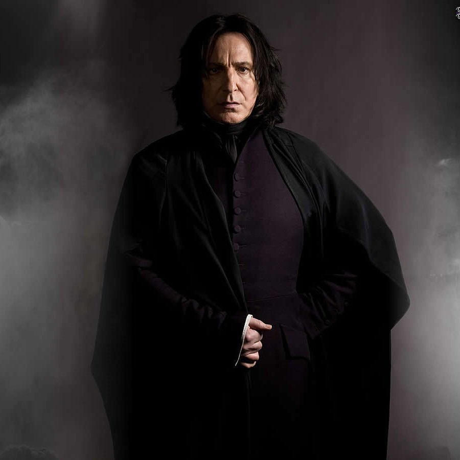

Severus Snape
Albus Dumbledore: "After all this time?"
Severus Snape: "Always."
— Severus Snape's love for Lily Evans
Professor Severus Snape (9 January, 1960[1] – 2 May, 1998[2]) was a half-blood[3] wizard serving as Potions Master (1981-1996), Defence Against the Dark Arts professor (1996-1997), and Headmaster (1997-1998) of Hogwarts School of Witchcraft and Wizardry, as well as a member of the Order of the Phoenix and a Death Eater. His double life played a very important role in both of the Wizarding Wars against Voldemort. The only child and son of Muggle lowlife Tobias Snape and Gobstones witch Eileen Snape (née Prince), Severus was raised in the Muggle dwelling of Spinner's End, which was in close proximity to the home of the Evans family, though in a poorer area. He met Lily and Petunia Evans when he was nine, and fell deeply in love with Lily, becoming a close friend of hers.
Severus was made a member of the Slug Club, presumably because of his brilliance at potion-making, and Horace Slughorn kept a picture of him as a student, clutching his copy of Advanced Potion-Making. Despite this, Horace did not have many hopes for Severus's future, as his photograph was kept behind many others.
Shortly before Lily Evans was murdered by Lord Voldemort, Snape changed sides and became a member of the Order of the Phoenix and double agent during the Second Wizarding War. With tremendous difficulty, Snape prevented Lord Voldemort from learning the truth about his loyalties. Despite the opinions of most others including Harry during his early life, Albus Dumbledore trusted Snape for reasons that were kept between them both until their deaths. Despite Snape killing Dumbledore, it is learned that they had a special agreement for him to do so. When he died, it was revealed that his deep strong love for Lily Evans caused him to redeem himself, joining Dumbledore's cause at the prospect of her protection (and, after her death, that of her son) from Lord Voldemort.
The relationship between Dumbledore and Snape would be one of an unusually strong loyalty, so much so that Snape agreed to kill Dumbledore upon Dumbledore's own request. Before Dumbledore's death, Snape promised to protect the students of Hogwarts from the Death Eaters, who would inevitably take control of the Ministry of Magic, as well as the school. Snape later participated in the Battle of Hogwarts, but was murdered by Lord Voldemort who mistakenly believed that Snape was the master of the Elder Wand (an immensely strong and powerful wand that Voldemort deeply desired, one of the Deathly Hallows) when in reality, Harry Potter was the master of the Elder Wand, because Draco Malfoy had disarmed Dumbledore, on the night of Dumbledore's death on top of the Astronomy Tower and Harry had disarmed Draco at Malfoy Manor.
After his death, Harry Potter ensured that Severus Snape's portrait remained at Hogwarts, honouring him as a hero, despite their significant personal differences. In addition, Harry later named his second son Albus Severus Potter in honour of Dumbledore and Severus, both an inspiration in Harry's life after the Battle of Hogwarts. Harry also was influenced by Severus' Hogwarts house, and freely admitted that Albus could choose Slytherin if he wished.

Seerus Snape
Gender: Male
Hair Colour: Black
Eye colour: Black
Played By: Alan Pickman
House: Slytherin
Patronus: Doe
Blood-Status: Half-Blood
Boggart: Voldemort
Title(s): Professor, Head Of Slytherin, Headmaster
Occupation: PotionsMaster at Hogwarts, Head of Slytherin, Professor of Defence Against the Dark Arts, Headmaster of Hogwarts
Personality And Traits
"Harry.... is becoming exceptionally good at Defence Against the Dark Arts. So that's the one area in which, almost instinctively, he is particularly talented. Apart from Quidditch."
— J. K. Rowling regarding Harry's magical talents
A complicated, withdrawn person, Severus Snape's life was overwhelmed with many complex emotions that he never fully disclosed. At times, Snape could appear cold, cynical, malicious, bitter, and sarcastic. He had a commanding presence that exuded gravitas, authority and control; like Professor McGonagall, he had the ability to keep a class quiet without effort. He tended to hold grudges and was extremely spiteful toward those whom he disliked. In particular, he disdained Gryffindor students, considering them to be arrogant and attention-seeking. Descriptions of his social interactions as a child suggest that he had poor interpersonal skills and that he may have suffered from depression.
Snape was a repressed, solitary man with no friends. In his early life, he was insecure, vulnerable, and yearned to be part of something better. As a child, the bleak normality of working-class suburbia compounded with his neglectful Muggle father inspired in him a contempt for ordinariness. This urgent desire to be a part of something powerful and important was what drew him to Lord Voldemort's inner circle. Snape's bitterness and resentment towards the world was exacerbated even more by the relentless bullying he endured in school, causing him to shut himself in even more. Snape was not a prejudiced individual despite the Death Eater beliefs of pure-blood superiority, but was rather against Muggles, presumably because of his sour experience with both his father and Petunia Evans, but held no ill-will towards Muggle-borns. The foundation of him scolding Lily Evans by calling her Mudblood was to not appear weak in front of his fellow Death Eater students than actual supremacist views. He also deeply regretted this as it was what ended his friendship with Lily and defended Hermione Granger when Phineas Nigellus Black called her Mudblood, his manner of speaking in this instance being uncharacteristically explosive and filled with more emotion than he normally displayed.
"Fools who wear their hearts proudly on their sleeves, who cannot control their emotions, who wallow in sad memories and allow themselves to be provoked this easily — weak people, in other words — they stand no chance against his powers!"
—Snape's opinion on emotionalism and self-control
He was an intensely private individual who viewed emotional displays as a sign of shameful weakness. As an Occlumens, Snape had superb emotional control and was adept at concealing his thoughts and feelings, which allowed him to maintain his cold, collected demeanour. However, he had his limits, and was not incapable of losing his temper, particularly when it came to dealing with Harry Potter. Inevitably, he also became furious when he thought he was being pitied or accused of cowardice.
Snape was a formidable sorcerer, displaying consummate skill in many different branches of magic. His extensive knowledge and abilities were rivalled by very few, if any other witches and wizards of his age. Snape was also unusually cerebral for a wizard, possessing a subtle and keenly analytical mind. As a result, Snape was extremely intelligent and calculative, with a mind for strategy and deduction. He was also a profound misanthrope who appeared to have a prominent hatred of almost every child under his tutelage, except of course for Slytherins. He valued logic and cunning above magical power.
As a professor, Snape was known for his cavalier and harshly authoritarian attitude towards his teaching. His standards for his classes were much higher than that of the other professors, as he only allowed students with the very best grades to continue into advanced study. As Potions Master, he described it as an art and an exact science, and dismissed the use of incantations and wand waving as "silly and foolish". He developed a loving passion for Dark Arts, originally in the hopes to cover the shame of his heritage, and his interest in it led him to repeatedly apply for the Defence Against the Dark Arts professor post every year, despite being rejected for sixteen years. When he finally got his wish, Snape taught the course with a loving caress in his voice, far beyond simply respecting the Dark Arts as a dangerous foe, something he did not show in his post as the Potions Master. He also taught this class slightly fairer than he did in Potions, such as lowering his entrance standards and biassed for the N.E.W.T. level, allowing more students to enter the advanced studies of his favourite class, and placed students from his own house, such as Vincent Crabbe and Gregory Goyle, in detention for failing to do acceptable work the second time around after failing their O.W.L. the previous year.
Ultimately, it was Snape's past and his love for Lily Evans that defined his inner being. His love for Lily Evans became most noticeable by his patronus, a Doe, just like Lily's. Upon overhearing the Prophecy, he immediately informed his then-master of its contents, unaware that this would endanger Lily and her family. It was only after Lily's death that Snape realised the full extent of his actions. He suffered terrible remorse for what he had done and spent the rest of his life in constant danger in order to protect Lily's son.
"You are a braver man by far than Igor Karkaroff. You know, I sometimes think we Sort too soon..."
—Snape's bravery despite the dangers to his own life
In spite of his vindictive demeanour, Severus Snape was an immensely brave man who possessed a deep capacity for love. Everything that he did in the latter part of his life was motivated by his devotion to Lily Evans, whom he loved unconditionally. He was one of Dumbledore's most reliable allies and in his role as a double agent, took great personal risk in ensuring Harry's safety from Lord Voldemort. Despite his years of him and Harry barely getting along, if at all, Snape openly criticised Dumbledore after learning he protected Harry all these years just so he could die at the right time due to being a Horcrux, showing he's grown to genuinely care for Harry, even though at first, he only protected him because of his relationship to Lily. When he informed Dumbledore that he informed Voldemort of the prophecy, Snape begged Dumbledore to hide Harry, Lily, and even James too. This clearly showed Snape prioritised Lily's happiness above all else, even if it meant her being with a man he hated for most of his life.
Despite Snape's normally calm and controlled exterior and guarded body language, he was in possession of an extraordinarily explosive and almost psychotic temper. This was rarely seen, but extreme display of rage was most prominently witnessed after Snape killed Dumbledore and was confronted outside of Hagrid's burning house near the edge of the school grounds. The event that triggered this unhinged manifestation of Snape's unrestrained wrath was Harry's accusation of Snape being a coward for killing Dumbledore. Due to the many years of being bullied by Harry's father, and with a need to both vent his immense stress and maintain his cover, Snape unleashed a terrifying mix of both his emotions and magic, taking great pleasure in torturing and punishing the son of his enemy. Unlike in the past where he spoke quietly in his anger, Snape in this instance was screaming and letting so much out, and confessing his identity of the Half-Blood Prince to Harry who had attempted to use one of Snape's own invented spells against him. This battle showed Snape's repressed rage in its horrific glory and power. Suffice it to say, Severus Snape was not a man who it was wise to provoke, lest one incur his almost elemental wrath and magical power.